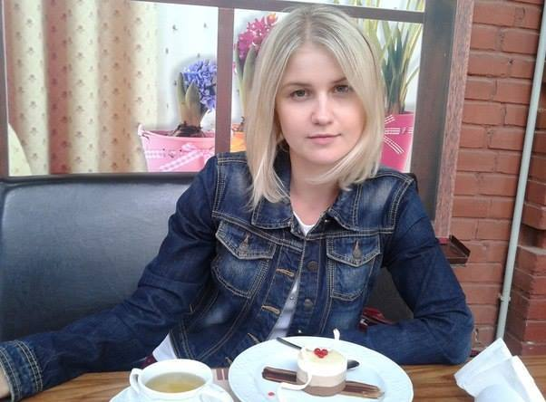

Don’t Miss These Latest Articles
-
Personal Information
-
Contact
- Adress: 82 Shevchenko St., Poltava, Ukraine
- Phone: +38 (050) 689 28 87
- E-mail: victoria_pozhar@ukr.net
-
Job Objective
I consider getting an interesting job in IT field with decent pay and possibility to work remotely
-
Education
Poltava University Of Economy And Trade (2008)
Speciality: Accounting and audit (specialist) -
Experience
-
Ltd "Eurotechservice": Accountant (2008 - 2015),
Main accountant (2015 - currently) - HTML layout designer - freelance (2019 - currently)
-
Ltd "Eurotechservice": Accountant (2008 - 2015),
-
Additional Skills
- English: upper-intermediate
- PC: experienced user
- Programs: Microsoft Office, 1C:8
-
Personal Qualities
- Sociable
- A Fast Learner
- No bad habits
-
Interests
- Dancing
- Jogging
- Knitting and sewing
- Rescue homeless animals (volunteer)